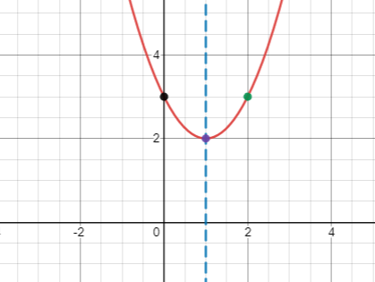

Topic 13 Quadratic Functions
13.1 Maximize the Revenue
When price increases, demand decreases and vice verse. A retail store found that the price \(p\) as a function of the demand \(x\) for a certain product is \(p(x)=100-\frac12 x\). The revenue \(R\) of selling \(x\) units is \(R=x\cdot p(x)=x(100-\frac12x)\). To maximize the revenue, what should be the price?
13.2 The Graph of a Quadratic Function
The graph of a quadratic function \(f(x)=ax^2+bx+c\), \(a\neq 0\), is called a parabola.
By completing the square, a quadratic function \(f(x)=ax^2+bx+c\) can always be written in the form \(f(x)=a(x-h)^2+k\), where \(h=-\dfrac{b}{2a}\) and \(k=f(h)=f\left(-\dfrac{b}{2a}\right)\).
- The line \(x=h=-\dfrac{b}{2a}\) is called the axis of symmetry of the parabola.
- The point \((h, k)=\left(-\dfrac{b}{2a}, f\left(-\dfrac{b}{2a}\right)\right)\) is called the vertex of the parabola.
13.3 The Minimum or Maximum of a Quadratic Function
Consider the quadratic function \(f(x)=ax^2+bx+c\), \(a\neq 0\).
- If \(a>0\), then the parabola opens upward and \(f\) has a minimum \(f\left(-\dfrac{b}{2a}\right)\) at the vertex.
- If \(a<0\), then the parabola opens downward and \(f\) has a maximum \(f\left(-\dfrac{b}{2a}\right)\) at the vertex.
13.4 Intercepts of a Quadratic Function
Consider the quadratic function \(f(x)=ax^2+bx+c\), \(a\neq 0\).
- The \(y\)-intercept is \((0, f(0))=(0, c)\).
- The \(x\)-intercepts, if exist, are the solutions of the equation \(ax^2+bx+c=0\).
Example 13.1 Find the axis of symmetry and the vertex of the quadratic function \(f(x)=x^2-4x+5\).
Solution.
The coefficients are \(a=1\), \(b=-4\) and \(c=5\). Then the axis of symmetry is \[x=-\frac{b}{2a}=-\frac{-4}{2\cdot 1}=2.\]
The vertex is given by \[(-\frac{b}{2a}, f(-\frac{b}{2a}))=(2, f(2))=(2, 1).\]
Example 13.2 Find the axis of symmetry and the vertex of the quadratic function \(f(x)=2(x-1)^2-1\).
Solution.
The equation is in the perfect square form \(f(x)=a(x-h)^2+k\). In this case, \(h=1\) and \(k=-1\). Then the axis of symmetry is \[x=h=1.\]
The vertex is given by \[(h, k)=(1, -1).\]
Example 13.3 Sketch the graph of the quadratic function \(f(x)=x^2-2x+3\).
Solution.
The line of symmetry is \[x=-\frac{b}{2a}=-\frac{-2}{2\cdot 1}=1.\]
The vertex is \[(-\frac{b}{2a}, f(-\frac{b}{2a}))=(1, f(1))=(1, 2).\]
Since \(k=f(1)>0\) and \(a=1>0\), the parabola is above the \(x\)-axis and there is no \(x\)-intercept.
The \(y\)-intercept is \[(0, f(0))=(0, c)=(0, 3).\]
To have a better graph, find an additional point on it, say \[(2, f(2))=(2, 3).\]
Using the above information to sketch the graph.

Example 13.4 Does the function \(f(x)=2x^2-4x-6\) have a maximum or minimum? Find it.
Solution.
- Since \(a>2\), the function opens upward and has a minimum.
- Find the line of symmetry \(x=\frac{-b}{2a}\): \(x=\frac{-(-4)}{2\cdot 2}=1\).
- Find the minimum by plugging \(x=1\) into the function \(f\). The minimum is \[ f(-\frac{b}{2a})=f(1)=2-4-6=-8. \]
Example 13.5 Consider the function \(f(x)=-x^2+3x+6\). Find values of \(x\) such that \(f(x)=2\).
Solution.
- Set up the equation for \(x\). \[-x^2+3x+6=2\]
- Solve the equation \(-x^2+3x+6=2\), we get \(x=-1\) or \(x=4\). The values of \(x\) such that \(f(x)=2\) are \(x=-1\) and \(x=44\).
Example 13.6 A quadratic function \(f\) whose the vertex is \((1, 2)\) has a \(y\)-intercept \((0, -3)\). Find the equation that defines the function.
Solution.
- Write down the general form of \(f\) using only the vertex. Quadratic functions with the vertex at \((1,2)\) are defined by \(y=a(x-1)^2+2\), where \(a\) is a nonzero real number.
- Determine the unknown \(a\) using the remaining information. Since \((0, -3)\) is on the graph of the function, the number \(a\) must satisfy the equation \(-3=a(0-1)^2+2\).
- Solving for \(a\) from the equation, we get \(a=-5\). The quadratic function \(f\) is given by \(f(x)=-5(x-1)^2+2\).
13.5 Practice
Problem 13.1 Sketch the graph of the quadratic functions \(f(x)=-(x-2)^2+4\) and find
- the coordinates of the \(x\)-intercepts,
- the coordinates of the \(y\)-intercept,
- the equation of the axis of symmetry,
- the coordinates of the vertex.
- the interval of \(x\) values such that \(f(x)\geq 0\).
Problem 13.2 Sketch the graph of the quadratic functions \(f(x)=x^2+2x-3\) and find
- the coordinates of the \(x\)-intercepts,
- the coordinates of the \(y\)-intercept,
- the equation of the axis of symmetry,
- the coordinates of the vertex.
- the interval of \(x\) values such that \(f(x)>0\).
Problem 13.3 Consider the parabola in the graph.
- Determine the coordinates of the \(x\)-intercepts.
- Determine the coordinates of the \(y\)-intercept.
- Determine the coordinates of the vertex.
- For what values of \(x\) is \(f(x)=-3\).
- Find an equation for the function.

Problem 13.4 Consider the graph of the function \(f\) shown in the picture.
- Determine the coordinates of the \(x\)-intercepts.
- Determine the coordinates of the \(y\)-intercept.
- Determine the coordinates of the vertex.
- Find the domain of the function.
- Find the range of the function.
- For what values of \(x\) is \(f(x)=\frac{3}{2}\).
- Over which interval is the function \(f\) positive.
- Over which interval is the function \(f\) decreasing.
- Find an additional point on the graph.
- Find an equation for the function.

:::{.exercise}
Consider the quadratic functions \(g(x)=x^2-3x-4\) and find the following values or intervals
- the coordinates of all intercepts
- the coordinates of the vertex
- the equation and graph of the axis of symmetry
- the domain and range in interval notation
- the coordinates of an additional point on the graph
- the maximum or minimum value
- the value at which the max or min is reached
- the interval over which the function is negative
- the interval over which the function is positive
- the interval over which the function is increasing.
Problem 13.5 A store owner estimates that by charging \(x\) dollars each for a certain cell phone case, he can sell \(d(x)=40 - x\) phone cases each week. The revenue in dollars is \(R(x)=xd(x)\) when the selling price of a computer is \(x\), Find the selling price that will maximize revenue, and then find the amount of the maximum revenue.
Problem 13.6 A ball is thrown upwards from a rooftop. It will reach a maximum vertical height and then fall back to the ground. The height \(h(t)\) of the ball from the ground after time \(t\) seconds is \(h(t)=-16t^2 + 48t + 160\) feet.
- When will the toy rocket reach its maximum height? What will be the maximum height?
- When will the toy rocket hit the ground?
- How high above the ground will the toy rocket be after 2 seconds.
- When will the toy rocket be 96 feet above the ground?
Problem 13.7 A ball is thrown upward from the ground with an initial velocity \(v_0\) ft/sec. The height \(h(t)\) of the ball after \(t\) seconds is \(h(t)= -16t^2 + v_0t\). The ball hits the ground after 4 seconds. Find the maximum height and how long it will take the ball to reach the maximum height.
Problem 13.8 A toy factory estimates that the demand of a particular toy is \(300 -x\) units each week if the price is $\(x\) dollars per unit. Each week there is a fixed cost $40,000 to produce the demanded toys. The weekly revenue is a function of the price given by \(R(x)=x(30-x)\)
- Find the function that models the weekly revenue, \(R\), received when the selling price is $\(x\) per unit.
- What the price range so the the revenue is nonnegative.